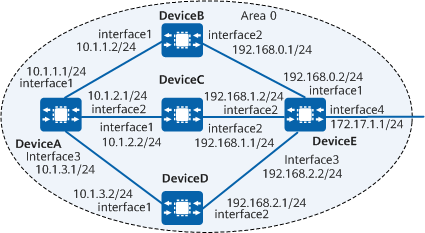

Example for Configuring OSPF Load Balancing
Networking Requirements
As shown in Example for Configuring OSPF Load Balancing:
DeviceA, DeviceB, DeviceC, DeviceD, and DeviceE run OSPF to implement IP network interworking.
DeviceA, DeviceB, DeviceC, DeviceD, and DeviceE belong to area 0.
Load balancing needs to be configured so that the traffic of DeviceA can be sent to DeviceE through DeviceC and DeviceD.

In this example, interface1, interface2, interface3, and interface4 represent 10GE 0/0/1, 10GE 0/0/2, 10GE 0/0/3, and 10GE 0/0/4, respectively.

Precautions
To improve security, OSPF area authentication or interface authentication is recommended. For details, see "Improving OSPF Network Security." OSPF area authentication is used as an example. For details, see "Example for Configuring Basic OSPF Functions."
Configuration Roadmap
The configuration roadmap is as follows:
Configure basic OSPF functions on each device to ensure routing reachability.
# Configure load balancing on DeviceA.
Set a weight for the next hop of each equal-cost route on DeviceA.
Configure per-packet load balancing on DeviceA.
Data Preparation
To complete the configuration, you need the following data:
Data of DeviceA, including the router ID (1.1.1.1), OSPF process ID (1), and network segments of area 0 (10.1.1.0/24, 10.1.2.0/24, and 10.1.3.0/24)
Data of DeviceB, including the router ID (2.2.2.2), OSPF process ID (1), and network segments of area 0 (10.1.1.0/24 and 192.168.0.0/24)
Data of DeviceC, including the router ID (3.3.3.3), OSPF process ID (1), and network segments of area 0 (10.1.2.0/24 and 192.168.1.0/24)
Data of DeviceD, including the router ID (4.4.4.4), OSPF process ID (1), and network segments of area 0 (10.1.3.0/24 and 192.168.2.0/24)
Data of DeviceE, including the router ID (5.5.5.5), OSPF process ID (1), and network segments of area 0 (192.168.0.0/24, 192.168.1.0/24, 192.168.2.0/24, and 172.17.1.0/24)
Number of routes for load balancing on DeviceA: 2
Next hop weights of the routes from DeviceA to DeviceB, DeviceC, and DeviceD (2, 1, and 1, respectively)
Procedure
- Assign an IP address to each interface. For detailed configurations, see Configuration Scripts.
- Configure basic OSPF functions. For details, see Example for Configuring Basic OSPF Functions.
- Check the routing table of DeviceA.
The default maximum number of equal-cost routes is greater than 3. Therefore, DeviceA has three valid next hops: DeviceB (10.1.1.2), DeviceC (10.1.2.2), and DeviceD (10.1.3.2).
[DeviceA] display ip routing-table Route Flags: R - relay, D - download to fib, T - to vpn-instance, B - black hole route ---------------------------------------------------------------------------- Routing Table: _public_ Destinations : 15 Routes : 15 Destination/Mask Proto Pre Cost Flags NextHop Interface 10.1.1.0/24 Direct 0 0 D 10.1.1.1 10GE0/0/1 10.1.1.1/32 Direct 0 0 D 127.0.0.1 10GE0/0/1 10.1.1.2/32 Direct 0 0 D 10.1.1.2 10GE0/0/1 10.1.2.0/24 Direct 0 0 D 10.1.2.1 10GE0/0/2 10.1.2.1/32 Direct 0 0 D 127.0.0.1 10GE0/0/2 10.1.2.2/32 Direct 0 0 D 10.1.2.2 10GE0/0/2 10.1.3.0/24 Direct 0 0 D 10.1.2.1 10GE0/0/3 10.1.3.1/32 Direct 0 0 D 127.0.0.1 10GE0/0/3 10.1.3.2/32 Direct 0 0 D 10.1.2.2 10GE0/0/3 127.0.0.0/8 Direct 0 0 D 127.0.0.1 InLoopBack0 127.0.0.1/32 Direct 0 0 D 127.0.0.1 InLoopBack0 192.168.0.0/24 OSPF 10 2 D 10.1.1.2 10GE0/0/1 192.168.1.0/24 OSPF 10 2 D 10.1.2.2 10GE0/0/2 192.168.2.0/24 OSPF 10 2 D 10.1.2.2 10GE0/0/3 172.17.1.0/24 OSPF 10 3 D 10.1.1.2 10GE0/0/1 OSPF 10 3 D 10.1.2.2 10GE0/0/2 OSPF 10 3 D 10.1.3.2 10GE0/0/3
- Set the maximum number of routes for load balancing to 2 on DeviceA.
[DeviceA] ospf 1 [DeviceA-ospf-1] maximum load-balancing 2 [DeviceA-ospf-1] quit
# Check the routing table of DeviceA. The command output shows that DeviceA has two routes for load balancing. The maximum number of equal-cost routes is set to 2. Therefore, the next hops 10.1.1.2 (DeviceB) and 10.1.2.2 (DeviceC) are valid.
[DeviceA] display ip routing-table Route Flags: R - relay, D - download to fib, T - to vpn-instance, B - black hole route ---------------------------------------------------------------------------- Routing Table: _public_ Destinations : 15 Routes : 15 Destination/Mask Proto Pre Cost Flags NextHop Interface 10.1.1.0/24 Direct 0 0 D 10.1.1.1 10GE0/0/1 10.1.1.1/32 Direct 0 0 D 127.0.0.1 10GE0/0/1 10.1.1.2/32 Direct 0 0 D 10.1.1.2 10GE0/0/1 10.1.2.0/24 Direct 0 0 D 10.1.2.1 10GE0/0/2 10.1.2.1/32 Direct 0 0 D 127.0.0.1 10GE0/0/2 10.1.2.2/32 Direct 0 0 D 10.1.2.2 10GE0/0/2 10.1.3.0/24 Direct 0 0 D 10.1.2.1 10GE0/0/3 10.1.3.1/32 Direct 0 0 D 127.0.0.1 10GE0/0/3 10.1.3.2/32 Direct 0 0 D 10.1.2.2 10GE0/0/3 127.0.0.0/8 Direct 0 0 D 127.0.0.1 InLoopBack0 127.0.0.1/32 Direct 0 0 D 127.0.0.1 InLoopBack0 192.168.0.0/24 OSPF 10 2 D 10.1.1.2 10GE0/0/1 192.168.1.0/24 OSPF 10 2 D 10.1.2.2 10GE0/0/2 192.168.2.0/24 OSPF 10 2 D 10.1.2.2 10GE0/0/3 172.17.1.0/24 OSPF 10 3 D 10.1.1.2 10GE0/0/1 OSPF 10 3 D 10.1.2.2 10GE0/0/2
- Set a weight for the next hop of each equal-cost route on DeviceA.
[DeviceA] ospf 1 [DeviceA-ospf-1] nexthop 10.1.1.2 weight 2 [DeviceA-ospf-1] nexthop 10.1.2.2 weight 1 [DeviceA-ospf-1] nexthop 10.1.3.2 weight 1 [DeviceA-ospf-1] quit
Verifying the Configuration
# Check information about the routing table on DeviceA.
[DeviceA] display ip routing-table Route Flags: R - relay, D - download to fib, T - to vpn-instance, B - black hole route ---------------------------------------------------------------------------- Routing Table: _public_ Destinations : 15 Routes : 15 Destination/Mask Proto Pre Cost Flags NextHop Interface 10.1.1.0/24 Direct 0 0 D 10.1.1.1 10GE0/0/1 10.1.1.1/32 Direct 0 0 D 127.0.0.1 10GE0/0/1 10.1.1.2/32 Direct 0 0 D 10.1.1.2 10GE0/0/1 10.1.2.0/24 Direct 0 0 D 10.1.2.1 10GE0/0/2 10.1.2.1/32 Direct 0 0 D 127.0.0.1 10GE0/0/2 10.1.2.2/32 Direct 0 0 D 10.1.2.2 10GE0/0/2 10.1.3.0/24 Direct 0 0 D 10.1.2.1 10GE0/0/3 10.1.3.1/32 Direct 0 0 D 127.0.0.1 10GE0/0/3 10.1.3.2/32 Direct 0 0 D 10.1.2.2 10GE0/0/3 127.0.0.0/8 Direct 0 0 D 127.0.0.1 InLoopBack0 127.0.0.1/32 Direct 0 0 D 127.0.0.1 InLoopBack0 192.168.0.0/24 OSPF 10 2 D 10.1.1.2 10GE0/0/1 192.168.1.0/24 OSPF 10 2 D 10.1.2.2 10GE0/0/2 192.168.2.0/24 OSPF 10 2 D 10.1.2.2 10GE0/0/3 172.17.1.0/24 OSPF 10 3 D 10.1.2.2 10GE0/0/2 OSPF 10 3 D 10.1.3.2 10GE0/0/3
As shown in the routing table, as the priorities of the routes with next hop addresses 10.1.2.2 and 10.1.3.2 are higher than that of the route with next hop address 10.1.1.2, DeviceA has only two valid next hops: 10.1.2.2 (DeviceC) and 10.1.3.2 (DeviceD).
Configuration Scripts
DeviceA
# sysname DeviceA # router id 1.1.1.1 # interface 10GE0/0/1 ip address 10.1.1.1 255.255.255.0 # interface 10GE0/0/2 ip address 10.1.2.1 255.255.255.0 # interface 10GE0/0/3 ip address 10.1.3.1 255.255.255.0 # ospf 1 maximum load-balancing 2 nexthop 10.1.1.2 weight 2 nexthop 10.1.2.2 weight 1 nexthop 10.1.3.2 weight 1 area 0.0.0.0 network 10.1.1.0 0.0.0.255 network 10.1.2.0 0.0.0.255 network 10.1.3.0 0.0.0.255 # return
DeviceB
# sysname DeviceB # router id 2.2.2.2 # interface 10GE0/0/1 ip address 10.1.1.2 255.255.255.0 # interface 10GE0/0/2 ip address 192.168.0.1 255.255.255.0 # ospf 1 area 0.0.0.0 network 10.1.1.0 0.0.0.255 network 192.168.0.0 0.0.255.255 # return
DeviceC
# sysname DeviceC # router id 3.3.3.3 # interface 10GE0/0/1 ip address 10.1.2.2 255.255.255.0 # interface 10GE0/0/2 ip address 192.168.1.1 255.255.255.0 # ospf 1 area 0.0.0.0 network 10.1.2.0 0.0.0.255 network 192.168.1.0 0.0.0.255 # return
DeviceD
# sysname DeviceD # router id 4.4.4.4 # interface 10GE0/0/1 ip address 10.1.3.2 255.255.255.0 # interface 10GE0/0/2 ip address 192.168.2.1 255.255.255.0 # ospf 1 area 0.0.0.0 network 10.1.3.0 0.0.0.255 network 192.168.2.0 0.0.0.255 # return
DeviceE
# sysname DeviceE # router id 5.5.5.5 # interface 10GE0/0/1 ip address 192.168.0.2 255.255.255.0 # interface 10GE0/0/2 ip address 192.168.1.2 255.255.255.0 # interface 10GE0/0/3 ip address 192.168.2.2 255.255.255.0 # interface 10GE0/0/4 ip address 172.17.1.1 255.255.255.0 # ospf 1 area 0.0.0.0 network 192.168.0.0 0.0.255.255 network 192.168.1.0 0.0.0.255 network 192.168.2.0 0.0.0.255 network 172.17.1.0 0.0.0.255 # return